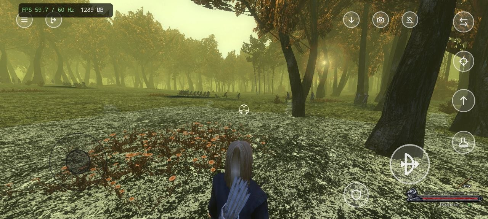

기능 소개
Android 호환성
Android 7.0부터 Android 17 및 최신 릴리스까지 지원하며, Android 10 이상에서는 향상된 스레딩을 제공합니다. HDR 및 컷아웃 없는 전체 화면 모드는 가장 몰입감 있는 경험을 제공합니다. 코어 고정은 성능을 높이는 데 도움이 되며, 고주사율 화면 지원은 움직임을 부드럽게 유지합니다. Adreno, PowerVR 및 Mali GPU에서 완전한 호환성을 갖춘 ARMv7 및 ARMv8 빌드를 사용할 수 있습니다.
언어 지원
현지화 파일은 PC와 동일한 경로에서 로드됩니다. 형태론적 형태, 문법적 격, 시제 변화와 같은 고급 언어 기능이 다시 작동하고, 현지화된 음성 오디오가 복원됩니다. 한국어가 지원되며 글꼴도 포함됩니다. 원본 게임에 없던 언어에는 문맥을 고려한 고품질 AI 번역과 새 언어로 번역하기 위한 내장 도구 키트가 제공됩니다. 진단 도구가 언어 파일의 문제를 검사합니다.
설치
현지화는 런처의 라이브러리에서 설치하거나 해당 파일을 적절한 폴더에 직접 넣어 설치할 수 있습니다.
폴더 경로
현지화 파일은 다음 폴더에서 읽습니다. 여기서 {code}는 en 또는 ar과 같은 언어 코드입니다:
patch/languages/{code}/게임 텍스트용patch/Modules/{module}/languages/{code}/모듈 텍스트용patch/Data/languages/{code}/font_data.xml글꼴의 글리프 표용main/Textures/languages/{code}/font.dds글꼴의 텍스처 아틀라스용patch/Modules/{module}/Sounds/languages/{code}/오디오용main/Sounds/languages/{code}/오디오용


컨트롤 사용자 지정
화면 터치 컨트롤, 게임패드 또는 키보드와 마우스로 게임을 조작하고 런처에서 구성하세요. 터치 컨트롤 테마를 선택하고 감도와 반전을 조정하며, 방향 버튼이 스와이프 또는 탭에 반응할지 선택하세요. 사용자 지정 키를 추가하고 아이콘을 선택하세요. 터치 컨트롤은 현재 화면에 따라 조건부로 표시되고 게임이 화면을 전환할 때 반응하므로 컨트롤이 현재 하는 일과 일치합니다.
게임 모듈
모듈 디렉터리 라우팅이 다시 작동하여 커뮤니티에서 만든 사용자 지정 모듈을 플레이할 수 있고, 에셋이 대체 경로와 함께 올바르게 로드됩니다. 셰이더 호환성과 투명도 문제가 수정되었으며, 재질 차이와 애니메이션 문제도 해결되었습니다. 컨트롤 검색은 모듈이 기대하는 키에 버튼을 매핑하도록 제안합니다. 색상과 아이콘은 특정 모듈과 모듈에 번들된 엔진 모드에 맞게 사용자 지정할 수 있습니다.


호환되는 타사 모듈
- Gekokujo
- Persistent World
- 1860s Old America
- 1257AD - Enhanced Edition (partially)
- A World of Ice and Fire (partially)
- The Last Days of the Third Age (partially)
- Perisno (partially)
- Rome at War
모듈 설치
각 모듈은 자체 폴더에 있습니다, patch/Modules/{module}/. 모듈 개발 정보:
모듈 개발
터치 UI 사용자 지정
touch.csv는 터치 버튼의 모양과 시작 위치를 변경합니다. 한 줄에 하나의 설정이 있는 일반 텍스트 파일입니다. 다음은 작은 예입니다:
attack.color|red
defend.x|80
*.color|#FFD700한 줄씩 읽으세요:
attack.color|red공격 버튼을 빨간색으로 만듭니다.defend.x|80방어 버튼의 중심이 화면 왼쪽에서 80% 지점에 오도록 이동합니다.*.color|#FFD700다른 모든 버튼을 금색으로 만듭니다. 공격 버튼은 자체 줄이 우선하므로 빨간색으로 유지됩니다*.
파일을 다음 이름으로 저장하세요: touch.csv 모듈의 언어 폴더에:
patch/Modules/{module}/languages/en/touch.csv모든 언어에 적용됩니다. 대부분의 설정을 여기에 두세요.patch/Modules/{module}/languages/{code}/touch.csv게임이 해당 언어를 사용할 때만 적용됩니다. 예를 들어 문자가 들어간 다른 아이콘을 사용할 수 있습니다.
게임 언어 파일의 키가 영어 파일의 동일한 키를 재정의합니다.
각 줄은 두 부분으로 나뉘며, 첫 번째 | 문자(세로 막대)에서 분리됩니다:
- 막대 왼쪽: 버튼 이름, 점, 설정 이름.
defend.x"방어 버튼의 x 위치"를 의미합니다. - 막대 오른쪽: 값, 예를 들어
80,red또는#FFD700. - 한 줄에 하나의 설정, UTF-8 텍스트로 저장됩니다.
|가 없는 줄은 건너뜁니다. - 같은 설정이 한 파일에 두 번 나오면 뒤의 줄이 우선합니다.
*버튼 이름 대신 사용하면 모든 버튼을 의미합니다. 다음에만 작동합니다:color및background, 위치, 크기, 아이콘 또는 표시 여부에는 적용되지 않습니다.
버튼 이름
- 전투:
attack,defend,kick,jump,use,zoom,switch_weapon,next_shield,crouch,weapon_mode,drop,camera,leave,menu,chat,orders,orders_more - 명령:
orders_up,orders_choose,orders_down,orders_back - 지도:
map_look,fast_travel,map_camera,stop_rest,map_menu - 교역:
trade_take_all,trade_give_all,trade_cancel - 부대:
party_stack,party_ten - 기타:
screen_back,dialog_up,dialog_select,dialog_down - 할당 가능:
extra1부터extra10 - 모드:
mod.{mod id}.{button id}
이동 스틱은 touch.csv 버튼이 아닙니다. 크기와 위치는 플레이어가 선택하므로 touch.csv로 변경할 수 없습니다.
설정:
attack.icon|M4 20 L20 4 M14 4 H20 V10아이콘을 24 x 24 그리드의 SVG 경로 명령(M, L, H, V, C, S, Q, Z)으로 설정합니다. 버튼의 한 버전만 변경하려면 해당 동작을 추가하세요:kick.game.kick.icon도보 중 발차기이고,kick.game.action.icon승마 중 발차기입니다.*.color|#FFD700아이콘 또는 레이블의 색상을 설정합니다. 다음을 쓰세요:#RRGGBB,#AARRGGBB, 또는 다음과 같은 색상 이름:red.defend.background|#C0301010버튼이 눌리지 않았을 때 버튼 뒤의 원반을 설정합니다.defend.x|80및defend.y|89버튼의 중심을 화면 너비와 높이의 백분율로 0에서 100까지 설정합니다.defend.size|14지름을 화면의 짧은 변의 백분율로 6에서 40까지 설정합니다.kick.shown|false버튼이 기본적으로 화면에 표시되는지 설정합니다. 다음을 쓰세요:true또는false.
범위를 벗어난 값은 범위로 제한되고, 잘못된 색상이나 키는 무시됩니다. 위치는 기본값일 뿐입니다. 플레이어가 이동, 크기 조정 또는 숨긴 버튼은 플레이어의 설정을 유지합니다. 편집기에서 재설정하면 모듈의 값이 복원됩니다.
엔진 모드 경로 및 패키징
모듈은 엔진 모드를 다음 위치에 포함할 수 있습니다: patch/Modules/{module}/mods/. 각 항목은 다음 중 하나입니다:
- 패키지의
.zip파일로, 파일이 루트 또는 하나의 폴더에 있음 - 패키지 파일이 있는 폴더:
manifest.json,mod.armv7.o및/또는mod.arm64.o, 그리고 선택적으로mod.jar
플레이어가 모듈을 선택하면 실행할지 한 번 묻습니다. 해당 모듈에서만 기본 설정으로 실행됩니다.
멀티플레이 및 엔진 업그레이드
1.158 및 1.174 버전과 호환되는 멀티플레이 서버에서 LAN을 포함해 플레이하세요. 사용자 지정 서버를 탐색하고 참여하면 런처가 선택한 서버에 필요한 모듈로 자동 전환합니다.
PC 엔진 기능과 스크립트 opcode는 Warband 1.173까지 업데이트됩니다. 캐릭터 가져오기 및 내보내기가 지원됩니다. 멀티플레이는 Warband 1.174에서 작동합니다.
게임플레이 추가 기능
Live Sky 셰이더는 구름에 애니메이션을 적용하고 밤하늘에 움직이는 효과를 추가합니다. Live Trees 셰이더는 나무와 기타 식물이 흔들리게 합니다. Fire Damage와 Water Physics & Drowning은 라이브러리에서 사용할 수 있습니다. 불은 캐릭터를 다치게 할 수 있고, 물은 물을 헤치며 걷기, 가라앉기, 익사를 추가합니다. Hit Vibration은 피해를 받거나 입힐 때 휴대폰을 진동시킬 수 있으며, 더 강한 타격은 더 강한 진동을 냅니다. 이 모든 기능은 런처에서 활성화하거나 비활성화할 수 있습니다.
향상된 로딩 속도와 게임플레이 성능
게임은 파일을 동시에 읽고 모듈 데이터와 텍스처를 작은 배치로 로드하여 더 빠르게 시작합니다. 또한 여러 스레드에서 셰이더를 컴파일하고 캐시하여 다음에 더 빠르게 로드합니다. 텍스처 스트리밍은 텍스처가 화면에 나타날 때까지 작게 유지한 다음 더 이상 필요하지 않을 때 다시 작게 만듭니다. 이렇게 하면 메모리가 절약됩니다.
ARM64 게임은 새로운 최적화로 처음부터 다시 번역되었고 느린 엔진 영역이 다시 작성되었습니다. 그 결과 ARM64 빌드가 이제 원래 ARMv7 빌드보다 뛰어난 성능을 보입니다. 다시 작성된 영역에는 애니메이션, 가시성, 충돌, 지형, 조준 및 그리기가 포함되어 이러한 작업에 필요한 작업량을 줄입니다. 게임과 그래픽은 장치의 가장 빠른 CPU 코어를 사용할 수 있고 백그라운드 작업은 다른 코어를 사용합니다. 시간을 가속할 때 세계 지도가 더 부드럽게 유지됩니다.
텍스처 형식
DXT BC1–3 텍스처 형식을 이미 지원하는 장치는 네이티브 텍스처를 바로 사용합니다. DXT를 지원하지 않는 장치는 선택할 수 있습니다. 텍스처를 한 번 변환하여 빠르게 로드하거나, 로드할 때마다 트랜스코딩할 수 있습니다. 처음부터 작성된 retexcon 라이브러리 모듈은 투명도를 포함한 ASTC, ETC1, ETC2 및 RGB8 형식을 처리합니다. 99.8% 정확도에 도달하며 ARM의 오픈 소스 라이브러리보다 몇 배 빠르게 실행됩니다. 저사양 장치의 경우 블록 크기와 텍스처 해상도를 구성할 수 있으며, 글꼴 및 스카이박스 같은 중요한 텍스처에는 예외가 있습니다. 64비트 빌드는 텍스처를 별도 메모리 영역에 로드하여 더 큰 텍스처를 허용하고 게임의 다른 리소스를 위한 공간을 더 남깁니다. HDR 스카이박스 텍스처가 완전히 지원됩니다. TexturesHD 지원이 복원되었고 일부 텍스처는 DXT 압축 아티팩트에서 복구되었습니다. 우리의 텍스처 엔진은 주문형 텍스처 스트리밍도 지원하여 필요한 RAM을 절반으로 줄입니다.
후처리 및 HDR
PostFX Restore는 모바일 포트에서 누락된 후처리 파이프라인을 복원합니다. 렌더 패스, 셰이더 기술, 노출, 블룸, 블러 같은 효과를 포함합니다. 장치가 지원하는 경우 더 높은 정밀도의 부동 소수점 렌더 타깃을 사용합니다. 게임의 감마 설정도 작동합니다.
지원되는 장치와 화면에서 HDR 출력은 HDR10 또는 HLG를 사용하여 표준 출력보다 밝기와 색상 범위를 확장합니다. 고급 픽셀별 톤 매핑은 이미지의 나머지 부분을 유지하면서 밝은 영역이 HDR 하이라이트에 도달할 수 있게 합니다. 자동 모드는 HLG를 선호한 다음 HDR10을 사용합니다. HDR 출력에는 장치, 그래픽 드라이버 및 디스플레이의 지원이 필요합니다. 그렇지 않으면 게임은 표준 SDR 출력을 사용합니다.
깜박임 감소
게임은 원래 16비트 대신 24비트 깊이 버퍼를 사용할 수 있습니다. 이는 먼 표면이 깜박이는 것을 방지하는 데 도움이 됩니다. Scene depth 설정은 24비트(D24S8)와 지원되는 장치에서 32비트 부동 소수점(D32F)을 제공합니다.
Framebuffer Format은 화면이 표시할 수 있는 색상 세부 수준을 제어합니다. 장치가 지원하는 형식인 RGB888(24비트), RGB10A2(30비트), RGBA16F(64비트 부동 소수점)를 제공합니다. 더 높은 색상 세부 수준은 그라디언트에서 보이는 밴드를 줄이는 데 도움이 됩니다. GPU 디더링도 끌 수 있습니다. 16비트 색상에서 고정 점 패턴을 일으킬 수 있습니다.
맞춤 제작된 TAA 모드는 원본 게임에 없던 시간적 안티앨리어싱을 추가합니다. NVIDIA DLSS 같은 최신 그래픽 기능처럼 주변 프레임의 정보를 사용하여 들쭉날쭉한 가장자리를 부드럽게 하고 깜박임을 줄입니다.
나무 세부 수준은 세계에 배치된 나무를 포함하여 이동할 때 부드럽게 혼합됩니다. 이렇게 하면 나무가 세부 수준을 전환할 때 갑작스러운 변화, 깜박임, 움직이는 선 및 겹치는 줄기를 피할 수 있습니다. 잎은 사라질 때 모양을 유지하며 어두운 가장자리가 없습니다. 풀과 작은 식물은 한 번에 나타나는 대신 페이드 인됩니다.
향상된 그림자
환경 그림자는 Tegra가 아닌 그래픽 칩에서 복원되며, 사각형 블록 대신 더 부드러운 가장자리를 제공합니다. 수정 사항은 그래픽 리소스가 재설정된 후 또는 섀도 맵이 실패할 경우 그림자가 사라지는 것을 방지하는 데 도움이 됩니다. 근처 캐릭터 그림자는 더 자주 업데이트되고 더 정확합니다. 캐릭터와 나무 그림자는 더 이상 갑자기 나타나지 않으며 전환이 부드럽습니다. 선택적 깊이 텍스처 모드는 부드러운 가장자리의 환경 그림자와 더 선명한 세부를 위한 더 가까운 맞춤을 제공합니다.
장면 전환
장면 변경은 검은 깜박임과 이전 장면의 남은 부분을 숨기기 위해 페이드 아웃 및 인될 수 있습니다. 새 장면이 그려지는 동안 이전 이미지가 계속 표시됩니다. 페이드를 끌 수 있습니다.
TTS 및 STT
텍스트 음성 변환은 대화와 선택한 대화 옵션을 소리 내어 읽을 수 있습니다. 음성은 지원되는 언어에서 사용할 수 있습니다. 음성 알림, 장면 메시지 및 멀티플레이 채팅을 활성화할 수도 있습니다.
음성 텍스트 변환을 사용하면 휴대폰의 음성 인식으로 채팅을 받아쓸 수 있습니다. 전투에서는 마이크 버튼이나 매핑된 키를 사용하여 음성으로 명령을 내리세요. 이름이 지정된 그룹이나 모든 사람에게 명령하거나 사용자 지정 명령 중 하나를 실행하세요. 음성 기능은 런처의 모드 설정에서 구성할 수 있습니다.
디버그 오버레이
FPS, RAM 사용량, 핑, 장치 온도 및 열 조절 상태를 오버레이에 표시합니다. 감마, 채도 및 대비를 조정하여 게임 이미지를 조정하세요.
UI 사용자 지정
메시지 크기를 조정하고 인터페이스를 4:3 또는 16:9로 설정하며 터치 버튼이 게임 화면 안에 유지되는지 제어합니다. 전투와 세계 지도를 전체 화면으로 유지하고 팝업과 화면 오류 메시지를 숨길 수 있습니다.
런처에는 게임의 rgl_config.txt 설정을 위한 편집기가 포함되어 있습니다. 설정을 검색하고 슬라이더, 스위치 및 메뉴로 편집하거나 원시 텍스트 보기를 사용하세요. 값을 게임 기본값과 비교하고 필요할 때 구성을 재설정하세요. 변경 사항은 게임이 다음에 파일을 읽을 때 적용됩니다.
저장 게임 관리
런처에서 저장된 게임을 관리하세요. 저장 파일을 가져오고 내보내며, 백업을 만들고 복원하고, savedata를 편집합니다.